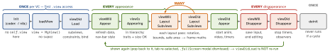
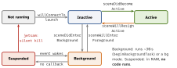

ios-swift · folio
In one line: A VC’s view is lazy: first access to .view runs
loadView then viewDidLoad (once); every show runs
viewWillAppear → viewIsAppearing → layout → viewDidAppear; every
hide runs viewWillDisappear → viewDidDisappear; deinit last.
The app moves Not running → Inactive ⇄ Active → Background → Suspended, reported
per scene since iOS 13.
Download PDF Print view LaTeX source


How it works
loadView— creates the root view. Default loads the nib/storyboard (or a blankUIView). Override only for all-code UI; assignviewand do not callsuper. Never call it yourself.viewDidLoad— in memory, not in a window, bounds = nib size: add subviews + constraints, no frame maths.viewIsAppearing(_:)— iOS 17 SDK, back-deployed to iOS 13. AfterviewWillAppear: view is in the hierarchy, trait collection and geometry are accurate. Best place for size/trait-dependent setup per appearance.viewWill/DidLayoutSubviews— every layout pass, also while on screen: keep cheap + idempotent. Always callsuper. Child VCs get callbacks forwarded (addChild→addSubview→didMove(toParent:)).
Example
final class FeedVC: UIViewController {
let table = UITableView(); var timer: Timer?
override func loadView() { view = table } // no super
override func viewDidLoad() { super.viewDidLoad(); setUp() }
override func viewWillAppear(_ a: Bool) {
super.viewWillAppear(a); reload() } // every show
override func viewDidLayoutSubviews() { // many times
super.viewDidLayoutSubviews(); gradient.frame = view.bounds }
override func viewDidAppear(_ a: Bool) { super.viewDidAppear(a)
timer = .scheduledTimer(withTimeInterval: 5, repeats: true) {
[weak self] _ in self?.reload() } }
override func viewWillDisappear(_ a: Bool) { // mirror
super.viewWillDisappear(a); timer?.invalidate() }
deinit { print("FeedVC freed") } } // proves no leakApp states — scene-based (iOS 13+)

Launch sequence (cold)
dyld + static init → main (@main) → UIApplicationMain → UIApplication + delegate → willFinishLaunching… → didFinishLaunching… → configurationForConnecting → scene(_:willConnectTo:options:) (make UIWindow, set root, makeKeyAndVisible) → sceneWillEnterForeground → sceneDidBecomeActive → first frame. Watchdog: ~20 s(unverified) or killed (0x8badf00d). A warm resume skips everything up to willEnterForeground.
App delegate vs scene delegate
UIApplicationDelegate = the process: didFinishLaunching, configurationForConnecting, didDiscardSceneSessions, push token, applicationWillTerminate (unreliable). UISceneDelegate = one UI instance (N per app on iPad): willConnectTo, the four hooks in the diagram, sceneDidDisconnect. With scenes adopted, application{DidBecomeActive, WillResignActive, DidEnterBackground,
WillEnterForeground} are not called. SwiftUI: @Environment(\.scenePhase) = .active / .inactive / .background (no “suspended” — no code runs); in App it aggregates all scenes. Bridge with @UIApplicationDelegateAdaptor.
Traps
- Touching
self.viewininitor a setter firesloadView+viewDidLoadearly — before your properties/outlets are set. - Frames in
viewDidLoadare the storyboard’s, not the device’s. UseviewIsAppearing/viewDidLayoutSubviews. .pageSheet/.automaticmodal (iOS 13 default): the presenter gets no viewWillDisappear/viewWillAppear — refresh via a delegate orpresentationControllerDidDismiss.- Pause a game on
WillResignActive(control centre, call) — not on DidEnterBackground; save on DidEnterBackground. Never rely on willTerminate: jetsam kills a suspended app silently. - A strong
Timer/closure target →deinitnever runs. Stop it inviewWillDisappear.
Child view controllers — the exact calls
addChild(child) // calls willMove(toParent:)
view.addSubview(child.view) // + constraints
child.didMove(toParent: self) // YOU call this one
// removing: the mirror image
child.willMove(toParent: nil) // YOU call this one
child.view.removeFromSuperview()
child.removeFromParent() // calls didMove(toParent: nil)Appearance callbacks reach the child automatically (shouldAutomaticallyForwardAppearanceMethods = true); a custom container that turns it off calls beginAppearanceTransition / endAppearanceTransition.
Remember
init · load · DidLoad · Will · Is · (layout)n · Did — Will · Did · deinit. Will = last chance to prepare; Did = already happened, safe to act. Appear/disappear come in pairs: start in one, stop in its mirror.